TOP 5 GI TAGS OF FEW INDIAN STATES

ANDHRA PARDESH
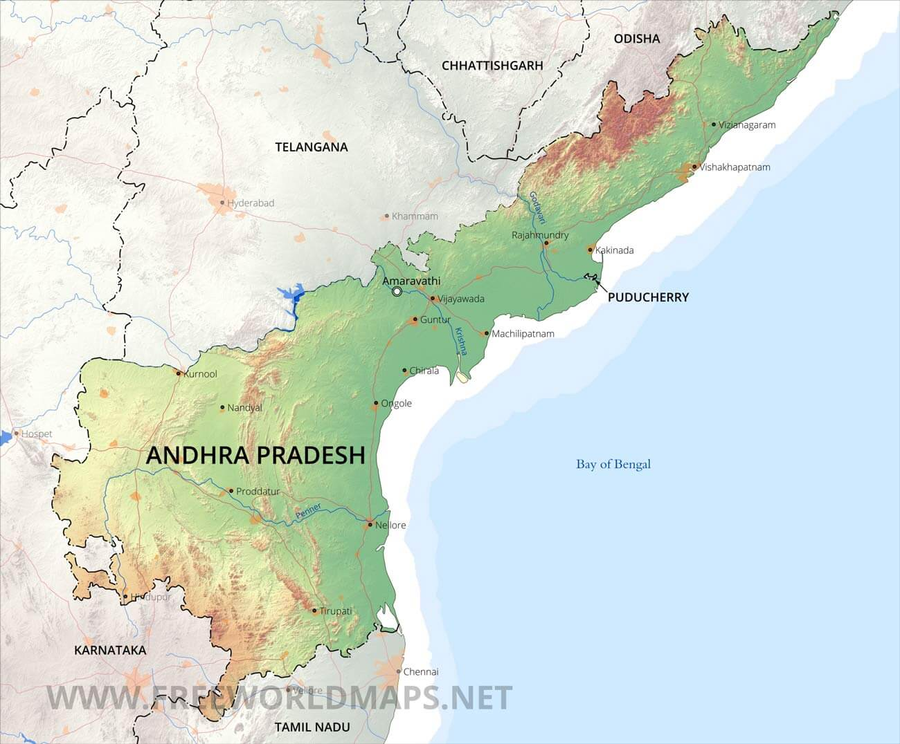
- Dharmavaram Handloom Pattu Sarees:These exquisite silk
sarees are exclusively woven on handlooms. The silk used
is extracted from high-quality Mulberry cocoons, resulting
in beautiful Dharmavaram silk sarees. The borders, pallu,
and body of the saree feature unique designs, often adorned
with gold-colored zari
- Nimmalakunta Leather Puppetry Craft: Nimmalakunta, a village
in Andhra Pradesh, is known for its traditional leather puppetry.
Skilled artisans create intricate leather puppets that depict
mythological stories and cultural themes.
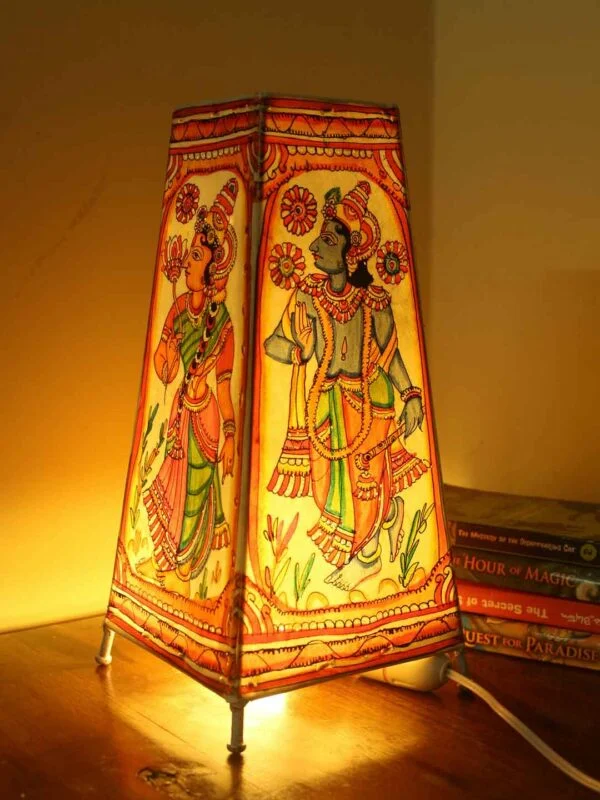
-
Bobbili Veena: Bobbili, a town in Vizianagaram district,
is renowned for its traditional veena (musical instrument) craftsmanship.
The Bobbili Veena has a distinct design and produces melodious tones.
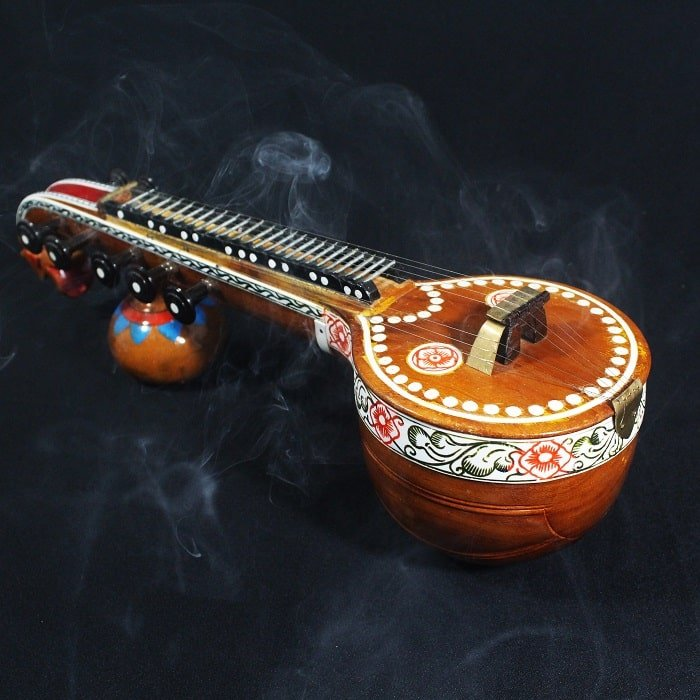
-
Banaganapalli Mangoes: Known as the “King of Mangoes,”
Banaganapalli mangoes are famous for their sweet, juicy flavor. These mangoes
thrive in the warm climate of Andhra Pradesh and are a delight during the mango
season.
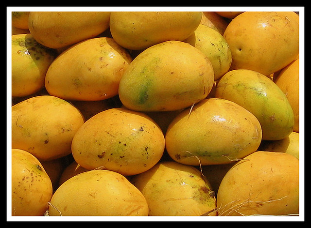
-
Kondapalli Toys: These traditional wooden toys are
handcrafted in Kondapalli village, near Vijayawada. Skilled artisans create
colorful and intricate toys, including animals, birds, and mythological characters.
The vibrant hues and attention to detail make Kondapalli toys a delightful addition
to any collection or playtime.
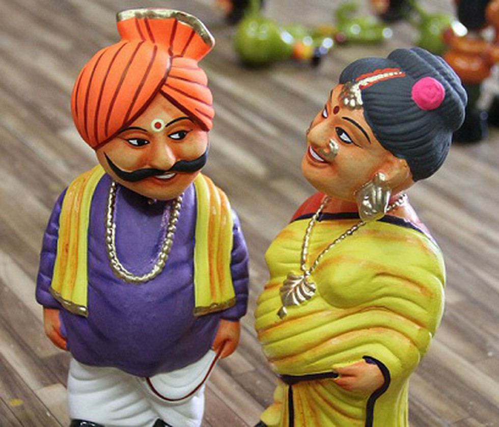
Arunachal Pradesh
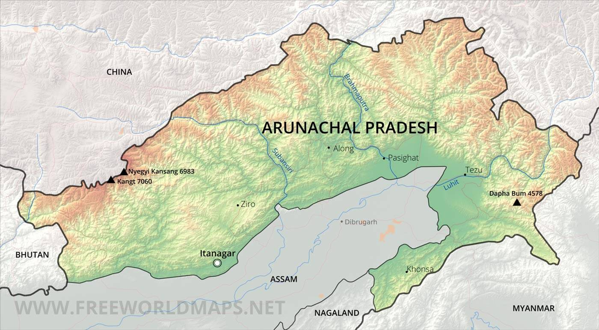
- Arunachal (Wakro) Orange: These citrus fruits are a major horticultural
crop in the region, accounting for about 90% of total citrus production. Known
for their distinct sweet-sour taste and high juice content, Arunachal oranges
thrive in the state's unique climatic conditions. Their orange-colored peel,
medium thickness, and round shape make them easily distinguishable. These oranges
are rich in vitamin C and ideal for eating alone or in fruit salads.
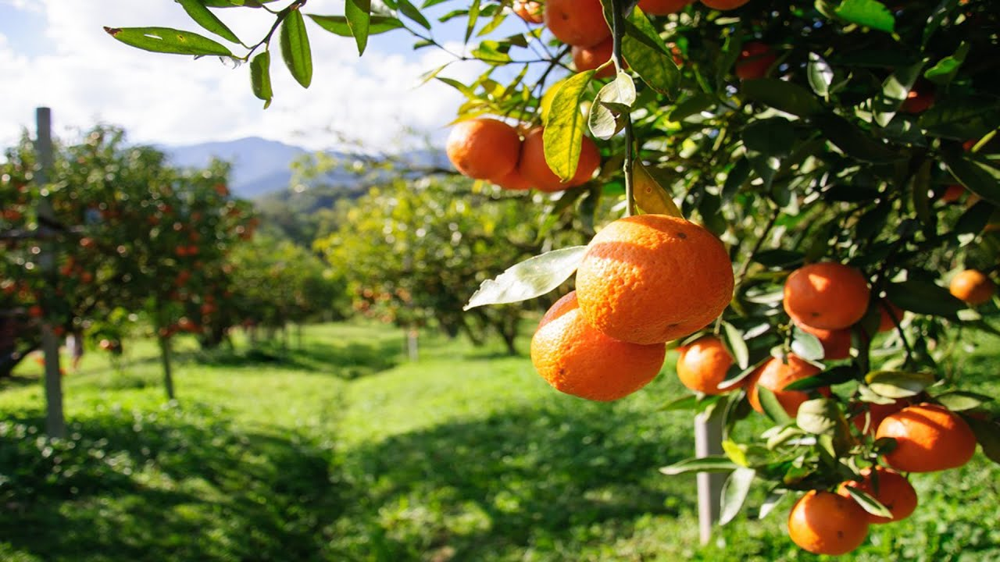
- Idu Mishmi Textile1: Handwoven by the Idu Mishmi
tribal group residing in the Mishmi Hills of Dibang Valley and Lower Dibang Valley,
these textiles feature elaborate geometric designs. With striking hues like Teei (black),
Shu (bright red), and Low (white), Idu Mishmi fabrics are used for various items, including hand purses,
shoulder bags, men's coats, and ladies shirts. They reflect the inventiveness of tribal artisans and
are woven using locally derived fibers from nettle plants.

-
Khaw Tai (Khamti Rice): This rice variety has also received a GI tag,
emphasizing its cultural and economic importance in Arunachal Pradesh.
Khamti rice, grown and cultivated by tribal communities in Arunachal Pradesh,
has received the GI tag. It is known for its nutritional value and resilience
to adverse weather conditions.

-
Yak Churpi: This traditional dairy product is made from yak milk.
It undergoes a unique process of fermentation, pressing, and drying to create a hard,
chewy cheese-like substance. Yak churpi is not only a local delicacy but also holds cultural
significance in the region.
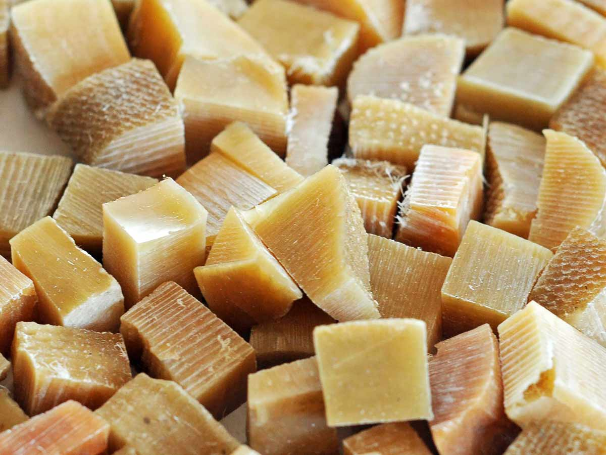
-
Tangsa Textile: The Tangsa community's textiles have also been granted the GI tag.
These fabrics reflect their rich cultural heritage, featuring intricate designs and vibrant colors.
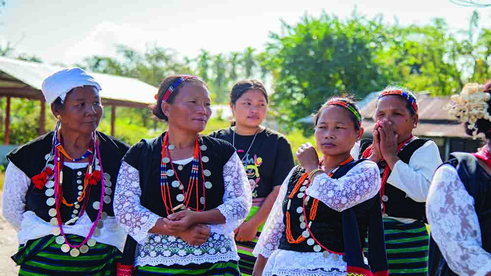
Goa

- Bebinca: A delightful Goan dessert, bebinca is a multi-layered
cake made from coconut milk, eggs, sugar, and ghee. Its rich flavor and
texture make it a favorite during festive occasions.
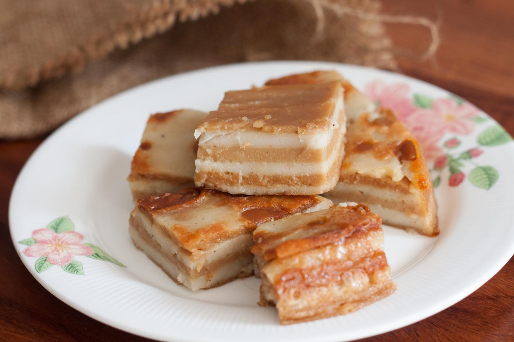
- Cashew Feni:Feni is a traditional Goan spirit made from cashew apples.
It has a distinct aroma and is enjoyed as a local specialty.
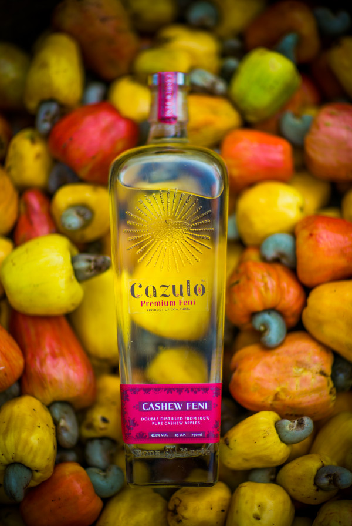
-
Mankurad/Mancurad Mango:These mangoes are prized for their
sweet taste and vibrant color. They thrive in Goa's tropical
climate and are a seasonal delight.
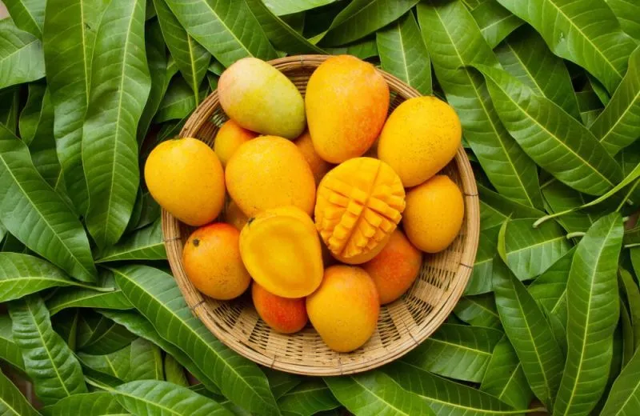
-
Agassaim Brinjal: Agassaim brinjal, also known as eggplant
or aubergine, is a local variety with unique flavor and texture.
It's used in various Goan dishes.

-
Goan Khaje:Khaje is a traditional sweet dish made from
wheat flour, sugar, and ghee. It has a crispy, flaky texture
and is often served during festivals.
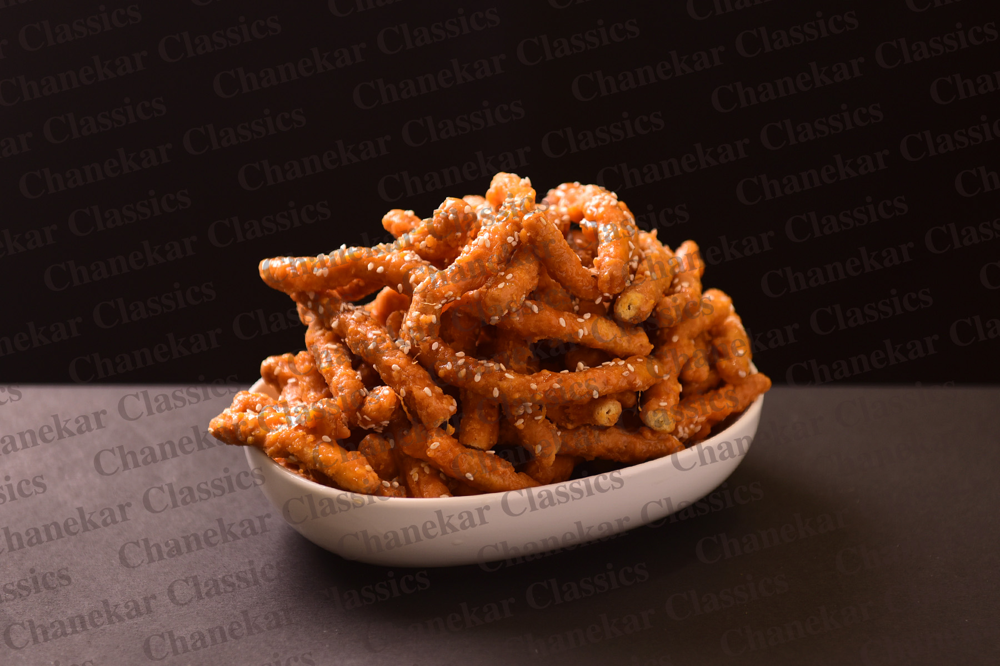
Himachal Pradesh
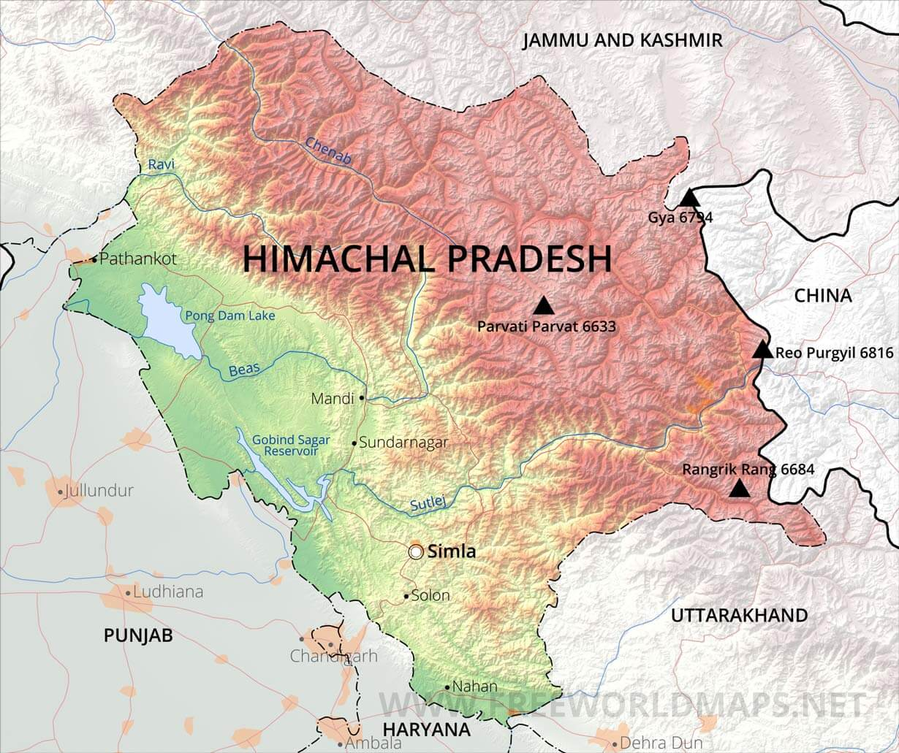
- Kullu Shawl: Kullu shawls were registered under
the Geographical Indication of Goods (Registration and Protection)
Act, 1999, on 10 December 2004. These shawls originate in the
Kullu Valley, particularly along the river valley of Beas
in Himachal Pradesh. They are crafted from various materials,
including local wool, Merino wool, Angora, Pashmina, synthetic
yarn, Yak wool, and cotton. A distinctive feature of Kullu shawls
is the colorful stripes or bands running horizontally widthwise at
the lateral ends, adorned with intricate patterns

- Kangra Tea:Kangra tea, registered in 2012,
is the second product from India to receive protected
Geographical Indication (GI) status from the European Union.
It is grown in the picturesque Kangra Valley and is
known for its distinct flavor and aroma

-
Chamba Rumal:Chamba Rumal, registered under the Geographical
Indications of Goods (Registration and Protection) Act, 1999,
on 22 January 2007, is associated with embroidered work done
on hand-spun 'khaddar' or fine muslin cloth. These square and
oblong textiles represent unique embroidery that flourished
during the 17th-18th centuries in Chamba town, Himachal Pradesh.
Figures of deities, especially Vishnu in various forms,
predominate in Chamba Rumal designs.

-
Kinnauri Shawl:Kinnauri shawls received GI recognition in 2008.
These handwoven shawls showcase intricate patterns and vibrant colors,
reflecting the rich cultural heritage of the Kinnaur region.

-
Kangra Paintings:Kangra paintings, also registered in 2012,
are a traditional art form originating from the Kangra region.
These exquisite miniature paintings depict themes from Hindu mythology,
love, and nature, characterized by delicate brushwork and vibrant colors.

Rajasthan
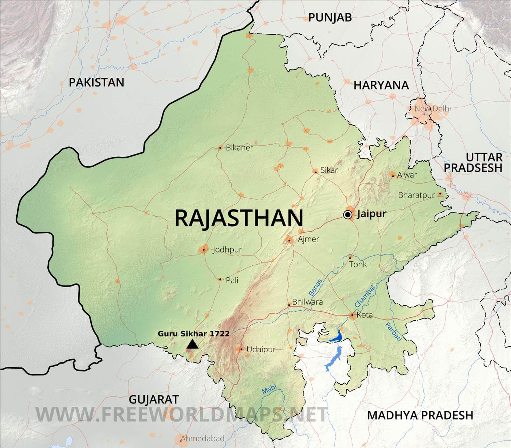
- Jodhpur Bandhej Work:Known for its vibrant tie-and-dye fabric,
Jodhpur Bandhej work represents the rich textile heritage of Rajasthans

- Udaipur's Koftagiri Metal Craft:This craft involves intricate
metalwork, showcasing Udaipur's skilled artisans and their craftsmanship1.

-
Rajsamand's Nathdwara Pichhwai Craft: Pichhwai paintings,
depicting Lord Krishna, are a hallmark of Rajsamand's artistic tradition1.
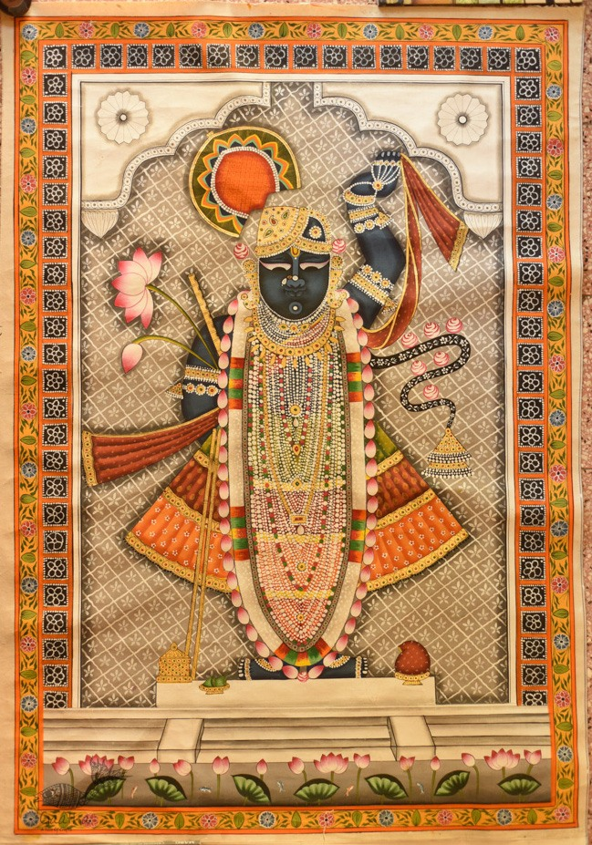
-
Bikaner's Usta Kala: Usta Kala refers to the intricate gold and
silver embossing work done by Bikaner artisans1.

-
Bikaner's Hand Embroidery Art: Bikaner is also known for its exquisite
hand-embroidered textiles1.

Sikkim
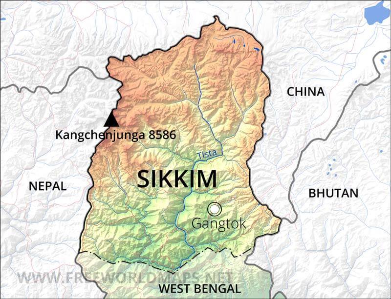
- Sikkim Large Cardamom:This aromatic spice received its
GI tag on March 23, 2015. It thrives in Sikkim's well-drained
soils and favorable climate, with cultivars like Ramsey,
Sawney, Golsey, Varlangey, and Seremna1. Large cardamom is
not only used in culinary delights but also finds its way
into Ayurvedic and traditional medicine systems.
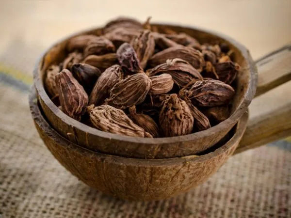
- Dalle Khursani (Red Cherry Pepper):Known for its fiery
heat, Dalle Khursani earned its GI tag. With a Scoville score
ranging from 100,000 to 350,000 SHU, this chili adds a punch
to Sikkimese cuisine23. It's a favorite among spice enthusiasts!
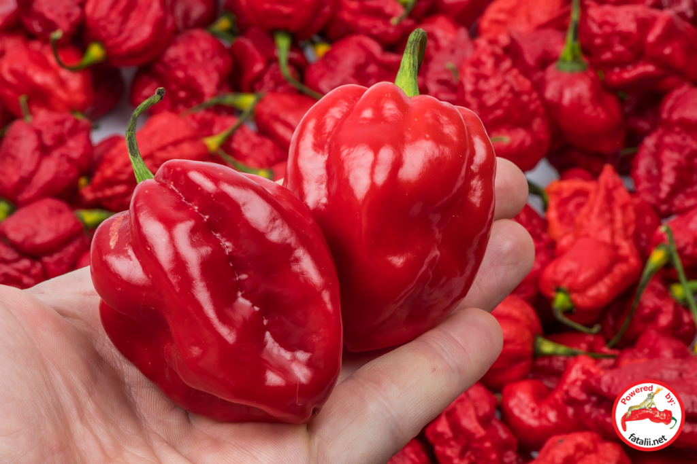
-
Sikkim Tea (Orthodox):Sikkim's tea gardens produce
high-quality orthodox tea, which has a distinct flavor and
aroma. The GI tag ensures its authenticity and origin.
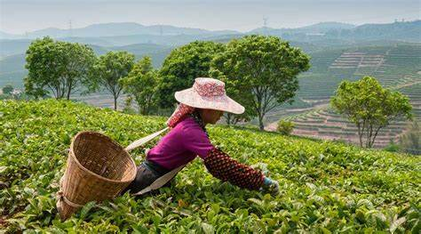
-
Sikkim Turmeric:Sikkim's unique turmeric variety,
with its vibrant color and medicinal properties, received
a GI tag. It's widely used in local cuisine and traditional
medicine.
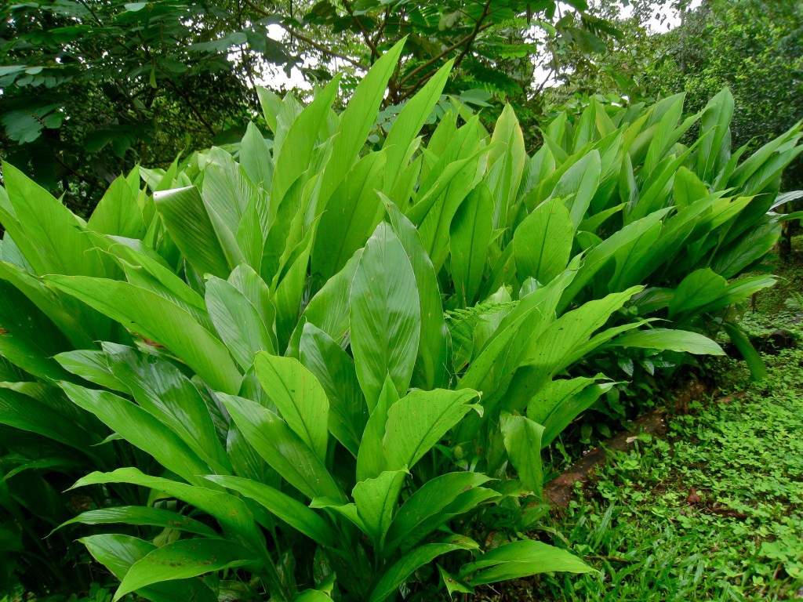
-
Sikkim Cherry:The juicy and flavorful Sikkim cherry,
also called “Hee Bermiok Cherry,” is GI-tagged. It grows in
the Himalayan foothills.rs.
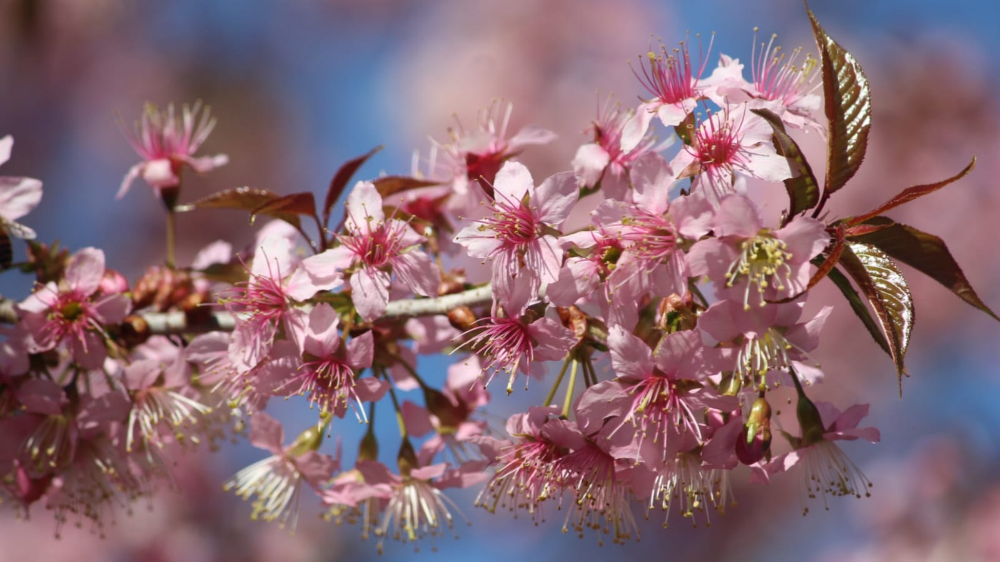
Uttrakhand
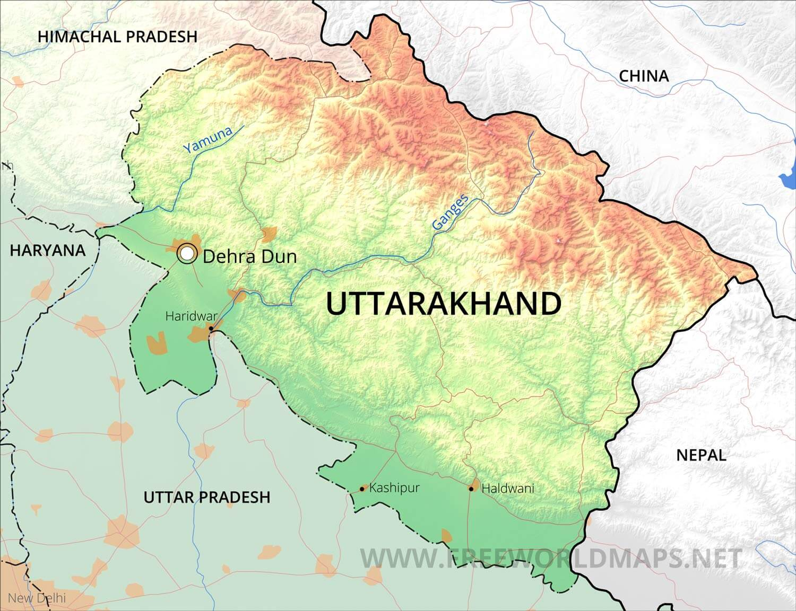
- Uttarakhand Chola:A nutritious grain, Uttarakhand
Chola (also known as horse gram) is grown in the region
and has a distinct taste and texture1.

- Jhangora:Jhangora, a type of millet, is a staple
food in Uttarakhand. It's gluten-free, rich in nutrients,
and used in various traditional dishes1.
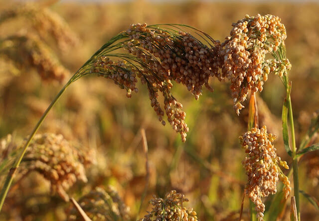
-
Mandua (Finger Millet):Mandua is another nutritious
millet that thrives in the state's hilly terrain.
It's a versatile grain used for making rotis, porridge, and more
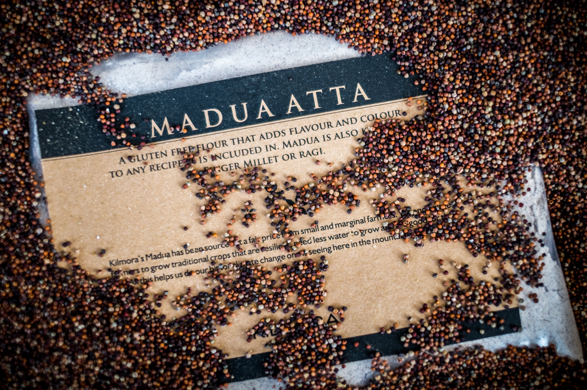
-
Red Rice:Uttarakhand's red rice, with its unique color
and flavor, has gained popularity. It's a healthier alternative to white rice

-
Almora Lakhori Chilli:This fiery chili variety from Almora
adds spice to local cuisine. Its GI tag ensures its authenticity and origin.